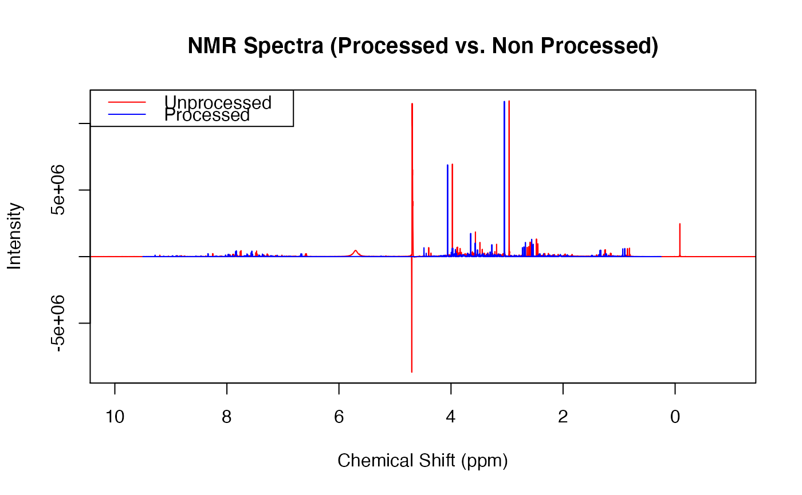

preproc.Rdpreproc() is a function aimed at streamlining the preprocessing stage of analysing NMR spectra. It harnesses the power of all preprocessing functions with in concentr8r to quickly and easily process spectra.
preproc( X, ppm, meta, bline = TRUE, flip = TRUE, cali = TRUE, calib = "tsp", linw = 1, lowCut = 0.25, watCut = c(4.5, 5), ureCut = c(5.6, 6), uppCut = 9.5, noi_sh = c(9.5, 11) )
| X | A matrix containing the non-preprocessed NMR spectral data. The rows should containing all values of a single experiment, and the columns, the values of the chemical shift variables. |
|---|---|
| ppm | An array of the chemical shift variables, column matched to X. |
| meta | The matrix of metadata pertaining to the X matrix. This is crucial for the TSP calibration and line width calculation. |
| bline | Default is set to |
| flip | Default is set to |
| cali | Default is set to |
| calib | This is the signal you wish to use as the calibrant. For urine spectra, tsp is the main calibrant. |
| linw | This argument defines the maximum line width that the tsp should have which is spectral validation. It uses the lw() function to calculate the line width of peaks. Spectra with peaks that have small line widths have sharper and more precise results which is more desirable. A maximum cutoff of 1 ensures spectra contain robust results. Consider omitting spectra with line widths over 1. |
| lowCut | A single floating point number defining the ppm value that the lower limit of the spectra are trimmed to. |
| watCut | The lower and upper ppm values concatenated, from which the water region will be trimmed and omitted. Water regions provide no important information and should be removed prior to data analysis. Default is set to |
| ureCut | The lower and upper ppm values concatenated, from which the urea region will be trimmed and omitted. Urea regions also provide no important information and should be removed prior to data analysis. Default is set to |
| uppCut | A single floating point number defining the ppm value that the upper limit of the spectra are trimmed to. |
| noi_sh | The shift of the noise region used to calculate estimation of noise |
This function returns a list with:
The processed X matrix in the first element,
The processed ppm array in the second element, and
The line width results in a data frame in the third element.
Following the example below will extract the results quickly and easily.
preproc() carries out a range of functions. Below is a simplistic run through. See the vignette "Preprocessing" to learn more about the process.
This function streamlines the preprocessing of NMR urine spectra by combining a range of functions. It:
Orientates the spectra correctly,
Calibrates the spectra by a specific peak,
Calculates the line widths of the peaks and returns a warning with the spectra that exceed the specified threshold,
Removes the lower, upper, water and urea regions of the spectra,
Corrects the baseline of the spectra using asymmetric least squares
Verifies that the resulting X, ppm and meta objects match appropriately.
read_in(path=system.file('extdata',package='concentr8r'), exp_type=list(exp=c("PROF_URINE_NOESY")), n_spec = 'multiple') plot(ppm, X[2,], type = 'l', col = 'red', main = 'NMR Spectra (Processed vs. Non Processed)', xlab = 'Chemical Shift (ppm)', ylab = 'Intensity', xlim = c(10,-1))preproc(X, ppm, meta, flip = TRUE, cali = TRUE, calib = 'tsp')#> Flipping the spectra... Done. #> Calibrating to tsp... Done. #> Checking line width of spectra... All spectra have linewidths under 1 #> Removing non-quantative regions... Done. #> Performing baseline correction... Done. #> Calculating Noise Estimations... Done. #> Checking that X and meta rows match... Done. #> Checking that ppm length and X columns match... Done. #>